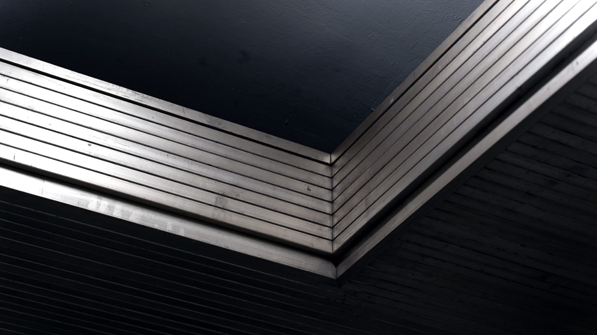
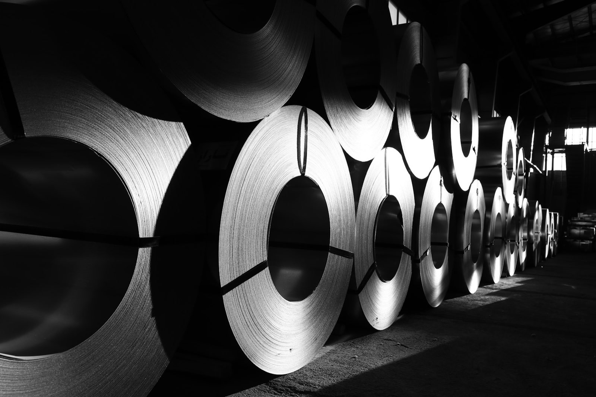

Materials
6種類の材料を、
同じ建屋で。
ステンレス、アルミ、真鍮、黄銅、りん青銅、チタン。用途で材料が決まっているなら、材料の側から工程を組みます。
取扱材料
01 取扱材料
SUSステンレス
ALアルミ
BS真鍮
BSP黄銅
PBりん青銅
TIチタン
取扱材料。
下に書いた性質は、材料としての一般的な傾向です。実際にできるかどうかは板厚・形状・要る精度で変わります。図面を見せてもらうのが早道です。
| 材料 | 絞りとの相性 | よく使われる理由 |
|---|---|---|
| ステンレス SUS | 加工硬化が強く、工程を割る必要がある。当社の得意分野 | 錆びにくい。食品まわり・水まわり・屋外に使える |
| アルミ AL | 柔らかく延びやすい。傷が付きやすいので型と潤滑に気を配る | 軽い。熱を伝える。腐食に強い |
| 真鍮 BS | 延びがよく、絞りやすい部類 | 電気を通す。削りやすい。見た目が出る |
| 黄銅 BSP | 真鍮と同系。組成で硬さが変わる | 端子・金具など、導電と加工性の両立 |
| りん青銅 PB | ばね性があるぶん、戻り（スプリングバック）を見込む | ばね・接点。繰り返し曲げに耐える |
| チタン TI | 硬く、型に焼き付きやすい。条件出しが要る | 軽くて強い。腐食に非常に強い |
コイル材の板厚は2.3ミリまで。NCコイルフィーダー1台で送ります。これを超える板厚、または枚数の少ない試作は、板材で受けます。
板とコイル
板で受けるか、
02 板とコイル

板で受けるか、
コイルで受けるか。
コイル材は、巻いた材料をNCフィーダーで自動送りします。止めずに流せるので、数の出る量産に向きます。板厚は2.3ミリまで。
板材は1枚ずつ入れます。手間はかかりますが、少ない枚数や、コイルに無い板厚・材質でも組めます。試作はこちらです。
どちらで受けるかは、数量と板厚で決まります。「月にどれくらい」「板厚いくつ」の2つが分かれば、その場で見当が付きます。
⚠️ 制作前に確認すること：板厚の下限（何ミリまで薄いものが絞れるか）、絞れる最大の深さ・径、材料支給の可否、および板材で受けられる材質の範囲は公開情報に無いので書いていません。本番では実際の条件を入れます。

CONTACT ご相談
図面が1枚あれば、話が早い。
まずは電話でも構いません。
できる・できないの見当は、その場で付きます。板厚、材質、数量、いつ要るか。この4つが分かれば、あとはこちらで組み立てます。